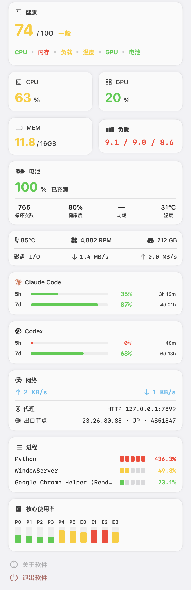
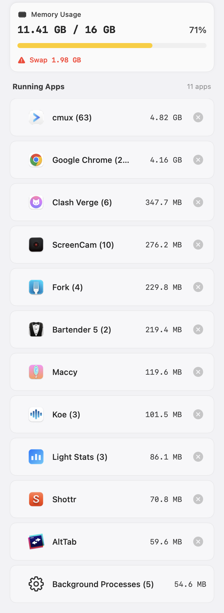

Know if your Mac is actually struggling.
Eleven live signals from the menu bar, folded into one health score. No windows to manage, no setup, no data leaving your machine.

What it reads
11 signals · 1 score- CPU load %
- Per-core usage P + E
- GPU utilization %
- Pressure level
- Used / total GB
- Swap ratio
- Disk capacity GB
- Read / write MB/s
- Up / down KB/s
- Proxy state TUN
- Exit node geo
- Battery %
- Temperature °C
- Fan RPM
- Claude Code 5h / 7d
- Codex 5h / 7d
One number for "is it sluggish right now"
The 0–100 score reads live pressure, not capacity. CPU saturation, memory pressure and swap, load average per core, temperature and thermal throttling, GPU. A Mac with 30 GB used and many apps open stays green if it isn't actually struggling. The score only drops when the system is.
A single saturated dimension caps the total, so the number tracks the bottleneck you feel, not a flattering average.
Network truth, not just speed
Throughput is the easy part. Light Stats also detects whether you are behind a proxy and, when you opt in, which exit node you are actually leaving through, with its geo-location and AS number.
The exit lookup is the only feature that reaches the network, it is off by default, and the first time you enable it the app explains exactly what it sends. See the privacy policy.
Claude Code and Codex usage, in the menu bar
For developers running local AI coding agents: live token-window usage for Claude Code and Codex, both the 5-hour and 7-day windows, read straight from local usage data. Know how close you are to a limit before it stops you mid-task.
See what's eating RAM, quit it in one click
The Memory tab lists running apps sorted by footprint, with grouped processes and a force-quit button on each row. A confirmation guards against losing unsaved work.

A readout, not a dashboard
Two lines in the menu bar: values on top, labels below, fixed widths so the layout never jitters as numbers change. Toggle each item in Settings to show only what you watch. Click any of it for the full panel.
Light Stats is local by default. This policy is short because there is almost nothing to disclose, and specific about the one thing there is.
Exit-node detection is the only feature that contacts the internet. It is off by default. When you turn it on, the app shows a disclosure first, then queries a public geo-IP service to learn your outbound IP, location, and AS number. Leave it off and Light Stats makes no network requests at all.
Data collection
Light Stats does not collect, transmit, or store personal data. System metrics are read locally and shown on your device. The app reads, for display only:
- CPU load and per-core utilization
- GPU utilization (supported Macs)
- Memory pressure, used, available, swap
- Disk capacity and disk I/O throughput
- Network up/down throughput and local proxy configuration
- Battery, temperature, and fan RPM (supported Macs)
- Running applications and their memory footprint (Memory tab)
- Local Claude Code and Codex usage data, read from their on-disk files
Local processing
All processing happens on your device through macOS system APIs (Mach, IOKit, SMC, CFNetwork, Network). Nothing is cached to disk beyond what the system already tracks.
Exit-node detection
When enabled, this feature sends a request to a public geo-IP service and caches the result briefly to avoid repeated lookups. It transmits no personal data beyond the network request itself, which necessarily reveals your IP to that service, the same as visiting any website. Disable it and no such request is ever made.
Third parties
No analytics, crash reporting, advertising, or third-party SDKs. The geo-IP service used by exit-node detection, only when you enable it, is the sole external service involved.
Open source
The full source is on GitHub. You can inspect exactly what the app does, including every network call.
Changes
Any change to this policy will appear here and in the app's release notes. Data handling will never change silently.
Last updated: June 2026
Light Stats is an open source project. Here is how to get help, report issues, or contribute.
Report a bug or request a feature
File an issue on GitHub. Include your macOS version, Mac model, and steps to reproduce. A screenshot of the panel helps.
→ github.com/EvilIrving/light-stats/issuesFor security concerns or private inquiries, email directly. Response within 2–3 business days.
→ jescain2024@gmail.comFrequently asked
- How do I change what shows in the menu bar?
- Click the ellipsis (…) in the panel to open Settings, then toggle items under Status Bar Items. You can also choose which dimensions feed the health score.
- Does exit-node detection cost me privacy?
- Only if you turn it on. It is off by default and shows a disclosure before its first lookup. With it off, the app makes no network requests.
- Why do some readings show N/A?
- GPU, fan, and battery require supported hardware. A desktop Mac with no battery, or a Mac without those sensors, shows N/A and drops that dimension from the score.
- Does it affect battery life?
- The default refresh is 2 seconds; CPU overhead is typically under 0.5%. Lower the refresh rate in Settings if you prefer.
- Is force-quitting safe?
- Force quit bypasses an app's normal shutdown and can lose unsaved work. The app confirms first. Prefer a normal quit when you can.